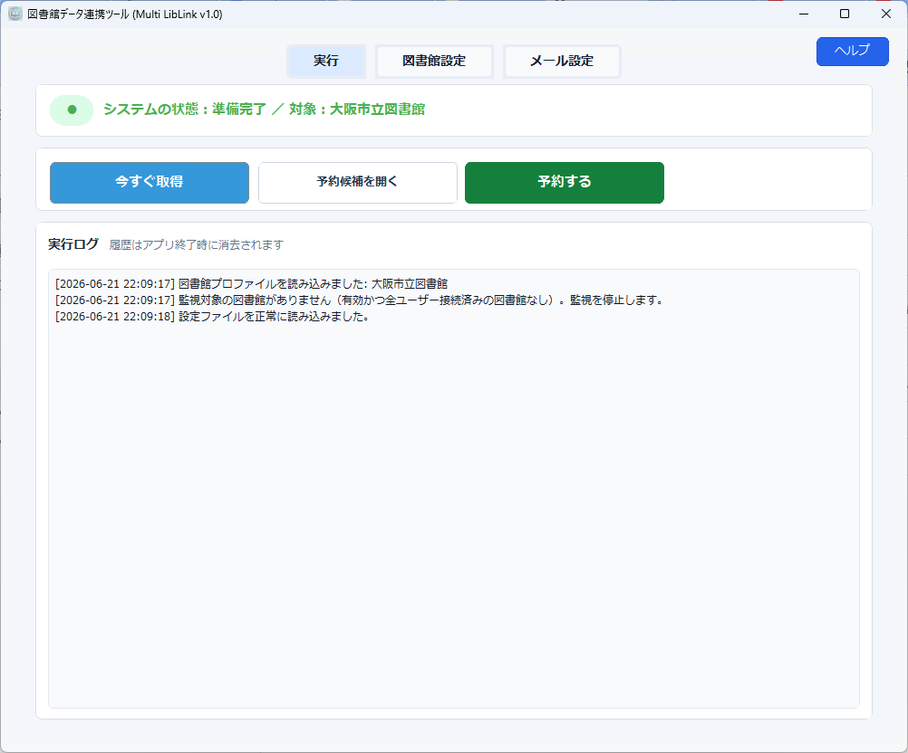
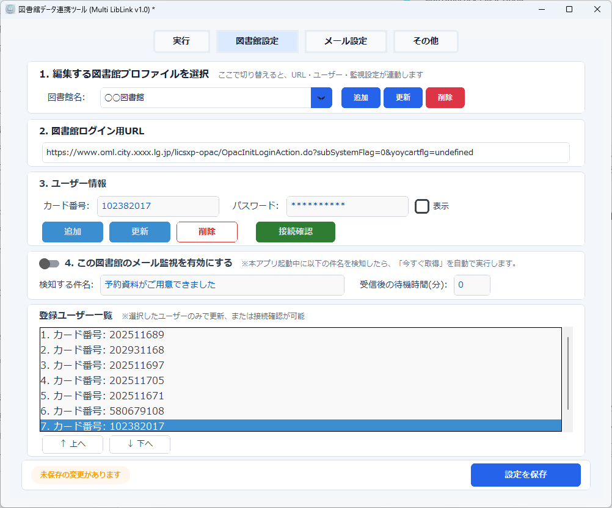
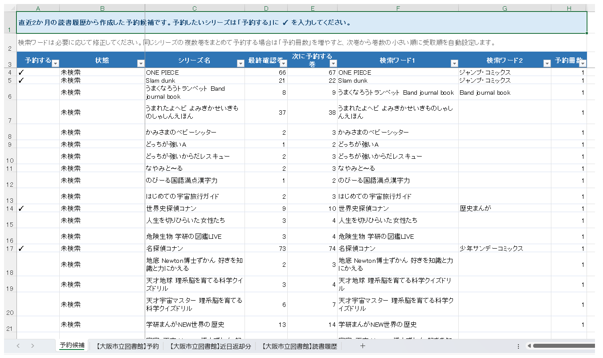
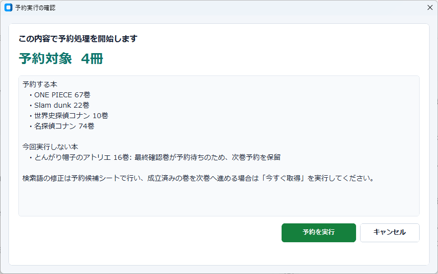
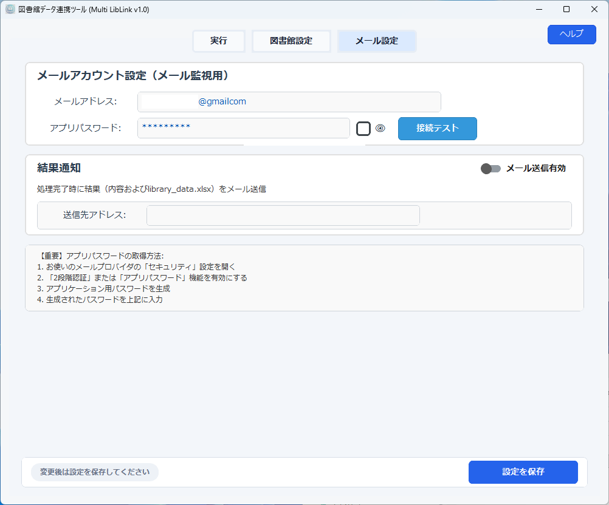
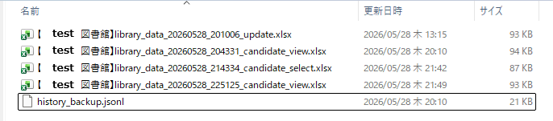

このヘルプは Web 版です。アプリのヘルプボタンから開くページと同じ内容を想定しています。
動作環境
| 対応 OS | Windows 10 / 11 を想定しています。macOS、Linux、スマートフォンでは利用できません。 |
|---|---|
| インストール方法 | 通常は配布されている MultiLibLink_Setup.exe を実行してインストールします。開発用の MultiLibLink.exe を直接起動することもできますが、通常利用ではインストーラー版を推奨します。 |
| 追加ランタイム | アプリ本体は必要な Python ライブラリを同梱した exe として配布する想定です。別途 .NET ランタイムや Python をインストールする必要はありません。 |
| ブラウザ部品 | 図書館 HP の操作には Playwright Chromium を使用します。初回実行時にブラウザ部品が無い場合、自動で準備されます。インターネット接続と、セキュリティソフトによる通信許可が必要になることがあります。 |
| ダウンロード | 配布ページは MultiLibLink ページ（MasaTools）です。最新版のインストーラーが公開されている場合は、このページから入手してください。 |
対応図書館
現時点で主に動作確認しているのは、URL に licsxp-opac を含む LICS-XP / iLis 系 OPAC の蔵書検索・予約画面です。この系統の画面構造を前提に、ログイン、貸出状況取得、予約状況取得、検索、予約確定を行います。
LibraXX、Calista、その他の OPAC については、画面構造やボタン名が異なる場合があるため、そのまま対応できるとは限りません。新しい図書館を追加する場合は、図書館設定でログイン URL とユーザー情報を登録し、接続確認でログインできるかを確認してください。
現在は「多くの図書館を一覧から選べるプリセット集」ではなく、図書館名・ログイン URL・ユーザー情報をアプリ内に登録して使う方式です。同じアプリ内に複数の図書館プロファイルを作成できます。
はじめて使う
初めて使う場合は、まず予約操作をせずに 今すぐ取得 だけを実行してください。取得が終わったら Excel を開き、予約中の本、借りている本、読書履歴が表示されていることを確認します。ここまで確認できてから、予約候補のチェックと予約実行に進むのが安全です。

ボタンの意味
| ボタン | 動作 |
|---|---|
今すぐ取得 |
登録ユーザーの貸出状況、予約状況、読書履歴を図書館 HP から取得し、Excel に保存します。予約候補シートも更新されます。 |
予約候補を開く |
library_data.xlsx を開き、予約候補シートを表示します。画面や版によって 取得データを開く（予約候補入力） と表示されることがありますが、同じ Excel を開く操作です。 |
予約する |
予約候補シートで 予約する にチェックした行だけを、図書館 HP で検索して予約します。 |
データフォルダを開く |
Excel、設定、バックアップが保存されているデータフォルダを開きます。通常はトラブル対応やバックアップ確認のときに使います。 |
通信遅延や図書館 HP の画面遷移失敗などで特定ユーザーだけ取得に失敗した場合は、そのユーザーだけを一度だけ自動で再処理します。再処理でも失敗したユーザーはその回の Excel 更新には含まれません。処理の最後には、実行ログに成功人数、失敗人数、再処理人数が要約されます。
定期的に自動取得するスケジュール実行は、現在の基本機能には含めていません。取得は 今すぐ取得 で手動実行します。メール監視を有効にした場合のみ、図書館からの通知メールをきっかけに取得処理を行います。
図書館設定

図書館名を選ぶか、追加します。図書館ログイン用 URLに、ブラウザでログイン画面が開く URL を入力します。- カード番号とパスワードを入力し、ユーザーを追加します。
- 登録ユーザー一覧で対象ユーザーを選び、
接続確認を実行します。 - 接続できたら
設定を保存を押します。
登録ユーザーは、一覧の上から順に予約処理で使われます。ユーザーごとの予約上限に近い場合は、次のユーザーへ自動で切り替えます。
データ保存場所
取得データや設定は、通常は次のフォルダに保存されます。
%LOCALAPPDATA%\MultiLibLink\
エクスプローラーでは、アドレスバーに上記を貼り付けて Enter を押すと開けます。アプリの データフォルダを開く ボタンからも開けます。
読書履歴は 今すぐ取得 の処理単位で下へ追加されます。返却日は見比べやすいように yyyy-mm-dd 形式で保存します。
| ファイルまたはフォルダ | 内容 |
|---|---|
【図書館名】library_data.xlsx | 貸出状況、予約状況、読書履歴、予約候補を保存するメインの Excel です。 |
config.json | 図書館設定、ユーザー設定、メール設定を保存します。 |
.secret_key | パスワード暗号化に使う鍵です。設定をバックアップする場合は、このファイルも config.json と一緒に保管してください。他人に渡さないでください。紛失すると、保存済みパスワードを復号できなくなる場合があります。 |
backups\ | Excel の自動バックアップを保存します。 |
backups\【図書館名】library_data\history_backup.jsonl | 読書履歴を追加保存する補助ログです。通常は開く必要はありません。 |
debug\debug.log | 動作確認用のログです。トラブル調査で使います。 |
Excel を開いたまま 今すぐ取得 や 予約する を実行すると、Windows からアクセス拒否されることがあります。実行前に library_data.xlsx を閉じてください。
予約候補の作られ方
今すぐ取得 が終わると、予約候補シートが自動で更新されます。候補は、直近約 2 か月の読書履歴、現在借りている本、現在予約している本を組み合わせて作成します。
読書履歴だけでなく、近日返却分や予約中の一覧にだけ出ている本も候補の判断材料にします。同じシリーズと判断できる複数行は、次に予約すべき巻を決めるために最終巻の 1 行へまとめます。
基本ロジック
- 読書履歴からシリーズ名と巻数を読み取ります。
- 同じシリーズと判断できる行は 1 行にまとめます。
- 現在借りている本、現在予約している本も同じシリーズとして確認します。
- 確認できた中で一番大きい巻数を
最終確認巻にします。 次に予約する巻は、通常最終確認巻 + 1です。
最終確認巻 は「読んだ巻」だけではありません。予約中の巻や、現在借りている巻がある場合は、それらも含めて一番先に進んでいる巻を指します。
予約中の巻がある場合
最終確認巻が予約中で、予約状態が 待ち の場合、次巻を予約すると順番が前後する可能性があります。そのため、状態は 予約待ちのため保留 になり、次巻予約の対象から外れます。
最終確認巻が 取置中 や確保済みと判断できる場合は、次の巻を予約しても順番が崩れにくいため、次巻予約の対象にできます。
シリーズ認識と検索ワード
タイトルには巻数、叢書名、著者名、出版社、副タイトルなどが混ざっています。MultiLibLink はこれらをできるだけ整理し、シリーズ名と巻数を抽出します。
NARUTO 巻ノ70のような巻表記を読み取ります。VOLUME74、Vol.49、第10巻、22などの表記も巻数として扱います。アイシールド21の21のように作品名に含まれる数字は巻数として扱わず、別に出てくる巻数だけを読み取ります。- 副タイトルだけで検索結果が 1 冊に絞られすぎる場合は、検索ワードから外します。
Cheese!フラワーコミックスのように細かい叢書名で見つかりにくい場合は、コミックスへ軽くすることがあります。- 同じシリーズでも、別シリーズと判断すべきものは分けます。例として
ジョジョの奇妙な冒険とストーンオーシャンは別シリーズとして扱います。
| 例 | 推奨される検索ワード | 理由 |
|---|---|---|
| 世界史探偵コナン | 世界史探偵コナン + 歴史まんが | 副タイトルを入れると 1 冊に絞られすぎるため、シリーズ全体が出る語にします。 |
| 日本史探偵コナン | 日本史探偵コナン + 歴史まんが | 世界史探偵コナンと同様に、シリーズ名と叢書の語で検索します。 |
| 名探偵コナン VOLUME74 | 名探偵コナン VOLUME74 | この形で 1 冊に絞り込めるため、巻数のしぼり込み操作を省けます。 |
| ネコまる Vol.49 | ネコまる Vol.50 | 雑誌系の Vol. 番号を巻数として扱い、次号の Vol. まで検索語に含めます。 |
| アイシールド21 26巻 | アイシールド21 + ジャンプ・コミックス | 21 は作品名の一部として扱い、後ろの数字を巻数として読み取ります。 |
| Slam dunk 完全版 | "Slam dunk" + 完全版 デラックス | 空白を含む語は引用符付きで扱い、重すぎる検索を避けます。 |
| うまくなろうトランペット Band journal book | うまくなろうトランペット + "Band journal book" | 叢書名を引用符付きのひとまとまりとして検索します。 |
| 電車で行こう 文庫 | 電車で行こう + 文庫 | 細かい叢書名では見つかりにくい場合があるため、検索語を軽くします。 |
LICS-XP / iLis 系 OPAC の検索では、検索結果が 1000 件を超えると検索条件を変更するよう求められる場合があります。この場合、状態は 検索語要確認（1000件超過） になります。シリーズ名だけで広すぎる場合は、叢書名を検索ワード2に入れるなどして絞り込んでください。
予約候補シート

予約する にチェックを入れ、必要に応じて検索ワードや予約冊数を修正します。主な列
| 列 | 説明 |
|---|---|
| 予約する | 予約実行の対象にする場合にチェックします。チェックは次回の 今すぐ取得 後も、同じシリーズであれば引き継がれます。 |
| 状態 | 検索や予約の結果、保留理由を表示します。 |
| シリーズ名 | アプリが同じシリーズと判断した名前です。 |
| 最終確認巻 | 読書履歴、貸出中、予約中から確認できた最大の巻数です。 |
| 次に予約する巻 | 通常は 最終確認巻 + 1 です。予約実行ではこの巻を探します。 |
| 検索ワード1 / 検索ワード2 | 図書館 HP で検索する語です。検索しにくい場合はここを手動で修正します。 |
| 予約冊数 | 通常は 1 です。2 以上は手動順番予約候補として扱い、安全のため自動検索・カート追加・申込みは行いません。 |
内部管理用に、図書館結果タイトル、実行ユーザー、最終処理日時、巻しぼり込み接頭辞、シリーズキーなどの列を持つ場合があります。通常は表示や編集の対象ではありません。
状態列の意味
| 状態 | 意味 | 次にすること |
|---|---|---|
| 未検索 | まだ予約実行で検索していない候補です。 | 予約する場合はチェックして実行します。 |
| 検索語要確認 | 検索ワードや巻数が不足しています。 | 検索ワード1、検索ワード2、次に予約する巻を修正します。 |
| 検索語要確認（1000件超過） | 検索結果が多すぎます。 | 検索ワード2を追加するなどして絞り込みます。 |
| 予約待ちのため保留 | 最終確認巻が予約待ちのため、次巻を先に予約しないよう保留しています。 | その巻が取置中になった後、今すぐ取得 で更新します。 |
| 検索結果なし | 検索したが対象巻が見つかりませんでした。 | 検索ワードを見直します。図書館に所蔵がない場合もあります。 |
| 検索失敗（タイムアウト） | 通信状況や図書館 HP の応答遅延で検索が完了しませんでした。 | 時間を置いて再実行します。必要に応じて検索ワードを軽くします。 |
| 予約済 | 今回の予約、または予約状況一覧での確認により予約成立を確認しました。 | 次に進むには 今すぐ取得 で候補を更新します。 |
| 予約済のため対象外 | 同じ巻が既に予約シートに存在するため、重複予約を避けました。 | 通常は何もしません。 |
| 一部予約済 | 複数巻まとめて予約したうち、一部だけ予約済みまたは対象外になっています。 | 予約候補と予約シートを確認します。 |
| 予約未成立（一覧未反映） | 予約操作後、予約状況一覧で反映を確認できませんでした。 | 同日中の再実行は避けます。図書館 HP で実際の予約状況を確認します。 |
| 未処理（前候補未成立） | 前の候補の成立が確認できず、安全のため後続処理を止めました。 | 予約状況を確認し、必要なら再実行します。 |
| 予約枠不足 | 登録ユーザーの予約枠が不足しました。 | 予約枠に空きができてから再実行します。 |
| 指定ユーザー予約枠不足 | 予約ユーザーを指定している候補で、そのユーザーの予約枠が足りません。 | 指定ユーザーを変更するか、予約枠が空いてから実行します。 |
予約実行

- 予約候補シートで
予約するにチェックします。 - Excel を閉じます。
- アプリの
予約するを押します。 - 確認画面で対象を確認し、問題なければ実行します。
予約上限とユーザー切り替え
MultiLibLink の現在の予約処理では、登録ユーザー 1 人につき予約上限を 15 件として扱います。登録ユーザー一覧の上から順に処理し、ユーザーごとの空き枠を見ながら次のユーザーへ切り替えます。
予約後に 15 件へ到達する割り当ては行わず、ひとつ手前で次のユーザーへ切り替えます。内部的には 15 - 現在予約数 - 1 を、そのユーザーで今回割り当て可能な冊数として扱います。たとえば現在 14 件のユーザーには 1 冊も追加せず、次のユーザーへ進みます。図書館側の実際の上限が異なる場合は、予約候補や実行前の確認画面で対象を調整してください。
今すぐ取得 から 10 分以内に予約処理を行う場合、直前取得で得た予約数を利用し、予約 15 件のユーザーは再確認せずにスキップします。
複数巻をまとめて予約したい場合
予約冊数 を 2 以上にすると、確認画面では 手動順番予約 として表示します。現在の v1.0 では安全のため、複数巻候補の自動検索・カート追加・申込みは行いません。
受取順を指定して予約したい場合は、予約候補シートで対象巻を確認し、図書館 HP から手動で順番予約してください。単巻候補だけは通常どおり自動予約の対象になります。
詳細ページで予約する場合
名探偵コナン VOLUME77 のように検索ワードだけで 1 冊へ絞れる候補では、検索結果から書誌詳細ページへ進むことがあります。詳細ページ全体のタイトルが対象巻と一致する場合は、ページ内の いますぐ予約する ボタンが表示されるまで待ってから予約します。
ボタンが表示されない場合や、図書館 HP 側の読み込みが途中で止まった場合は、状態が 予約ボタン未検出 などになります。時間を置いて再実行するか、予約候補シートの検索ワードを確認してください。
予約処理が終わると、実行ログに今回予約できた本、予約できなかった本、未処理になった本が要約されます。詳しい状態は予約候補シートにも記録されます。
メール監視

メール監視は任意機能です。通常の 今すぐ取得 と 予約する だけなら設定しなくても使えます。
何を監視するか
図書館設定で有効にした図書館について、指定した件名キーワードを含むメールを監視します。たとえば 予約資料がご用意できました のような取置通知を検知する想定です。
件名キーワードは、図書館設定タブの 4. この図書館のメール監視を有効にする をオンにしたうえで、検知する件名 に入力します。現在は 1 図書館につき 1 つのキーワードを指定する方式で、複数キーワードの OR 指定には対応していません。
通知メールを検知したとき
- 設定した待機時間があれば、その分だけ待ちます。
- 対象図書館の
今すぐ取得相当の処理を行い、予約状況や貸出状況を更新します。 - 結果通知を有効にしている場合、処理結果と
library_data.xlsxを送信先アドレスへ送ります。
結果通知はメール設定タブの 結果通知 で メール送信有効 をオンにし、送信先アドレス を入力すると有効になります。取得処理または予約処理が終わったあとに送信します。
Gmail のアプリパスワードを取得する
Gmail を使う場合は、Google アカウントの通常のログインパスワードではなく、Google が発行する 16 桁のアプリパスワードを MultiLibLink に入力します。Google 公式ヘルプでは、アプリパスワードの作成には 2 段階認証プロセスが必要と案内されています。
- ブラウザで Google アカウントのログイン画面 を開き、MultiLibLink で使う Gmail アカウントにログインします。
- ログイン後、Google アカウントの「セキュリティ」 を開きます。
2 段階認証プロセスが未設定の場合は、画面の案内に従って有効にします。- アプリ パスワード を開きます。再ログインを求められる場合があります。
- 名前を入力できる画面では
MultiLibLinkなど分かりやすい名前を入力し、作成します。 - 表示された 16 桁のパスワードをコピーし、MultiLibLink のメール設定タブにある
アプリパスワード欄へ貼り付けます。空白は入れないでください。 接続テストを押し、成功したら設定を保存します。
Google アカウントの種類や保護設定によっては、アプリパスワードの項目が表示されない場合があります。職場・学校のアカウントでは管理者の設定が必要なことがあります。
接続テストで失敗する場合
通常のログインパスワードではなく、利用中のメールサービスで発行したアプリパスワードを入力してください。メールアドレスに入力ミスがないか、IMAP が利用可能かも確認してください。
バックアップと復元

MultiLibLink は、Excel を保存する前に既存の library_data.xlsx をバックアップします。通常画面に復元ボタンは置いていません。誤操作を防ぐため、復元が必要なときだけ手順を確認しながら手動で戻します。
バックアップの保存場所
%LOCALAPPDATA%\MultiLibLink\backups\【図書館名】library_data\
世代管理
- 直近 30 件のバックアップは保持します。
- 90 日以内の古いバックアップは、日ごとに 1 件を残します。
- 90 日より古いバックアップは、月ごとに 1 件を残します。
- 短時間でバックアップが増えすぎないよう、直近 10 分以内にバックアップがある場合は新規作成を抑制します。
Excel をバックアップから戻す手順
- MultiLibLink と Excel を閉じます。
データフォルダを開くでデータフォルダを開きます。- 作業前に、データフォルダ全体を別の場所へコピーして保管します。
- 現在の
【図書館名】library_data.xlsxを、念のため別名に変更します。 backups\【図書館名】library_dataから戻したい日時の Excel をコピーします。- コピーしたファイル名を
【図書館名】library_data.xlsxに変更します。 - MultiLibLink を起動し、Excel の内容を確認します。
history_backup.jsonl の使い方
history_backup.jsonl は、読書履歴を追加保存する補助ログです。Excel バックアップから戻せない場合に、読書履歴だけを復元するための材料として使います。通常は編集しないでください。
復元作業では、現在のファイルを上書きする前に必ず別名で残してください。ファイルを削除せず、データフォルダ全体をコピーしてから作業すると安全です。
困ったとき
Excel への書き込みでアクセス拒否される
library_data.xlsx を Excel で開いたままにしている可能性があります。Excel を閉じてから、もう一度 今すぐ取得 または 予約する を実行してください。
予約したはずなのに予約状況に出ない
アプリは予約状況一覧で反映を確認できたものだけを 予約済 とします。確認できない場合は 予約未成立（一覧未反映） として記録し、同日中の重複予約を避けます。図書館 HP で実際の予約状況を確認してください。
検索が遅い、またはタイムアウトする
検索語が広すぎる場合や、3 語以上の検索で図書館 HP が重くなる場合があります。検索ワード1と検索ワード2の 2 語程度に整理し、巻数はしぼり込みで指定する形にしてください。
メール接続テストに失敗する
メールアドレス、アプリパスワード、IMAP の有効化を確認してください。通常のログインパスワードではなく、メールサービスで発行したアプリパスワードが必要です。
図書館に接続できない
ログイン URL が正しいか確認してください。ブラウザでその URL を開き、ログイン画面が表示される URL を設定します。図書館側の画面構造が対応外の場合、接続確認や予約処理ができないことがあります。